Analytics mindset
EDGAR Explorer two
Submissions Application Programming Interface (API)
Part 1 and Part 2 Alteryx workflow solution overview
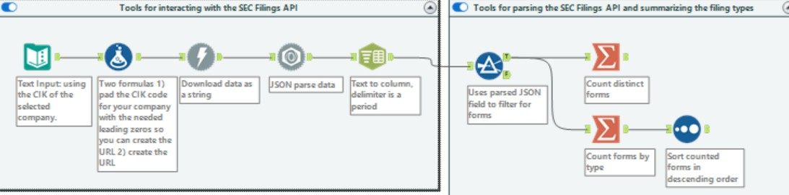
Detailed instructions for each respective tool can be found in the following pages.Part 1: Choose a company. Find its central index key (CIK) code using the Electronic Data Gathering, Analysis, and Retrieval (EDGAR) system Company Filings CIK Lookup Tool at: https://www.sec.gov/edgar/searchedgar/companysearch.
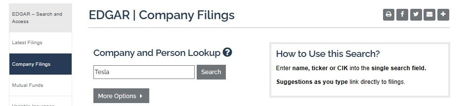
As an example, for Tesla, type Tesla into the box and click “Search.”The search will return the screen shown below.
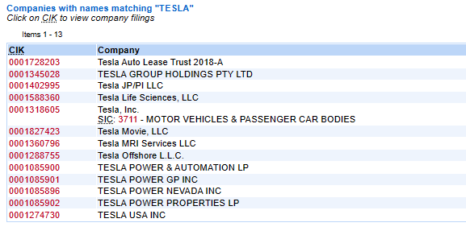
Depending on the company selected, there can be several different CIK codes returned, as evidenced by the Tesla example. Help your students understand that this may happen depending upon the company they select. If there are multiple companies listed, help your students understand they need to make sure they are choosing the correct CIK. One way to confirm the company is by checking the company’s identifying information in the header after clicking on the company link. For example, we can confirm that Tesla’s
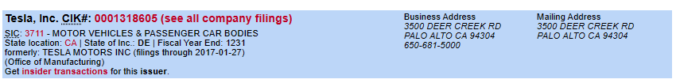
address is correct, allowing us to know we have found the correct CIK, which is 0001318605.Part 2: Using Alteryx
Download the submissions filing for the company selected. Remember to declare your university name and university email address in the User-Agent header. Answer: See the detailed Alteryx workbook solution for steps 1 and 2 below.
Deserialize the JavaScript Object Notation (JSON) formatted submissions filing for your company. Answer: See the detailed Alteryx workbook solution, step 3, below.
Use the output tool to:
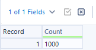
Identify the number of unique forms filed by the entity. Answer: The total number of forms will vary based on the company selected. For most large companies, the answer will be around 1,000, which is the number of filings the API is expected to return. Occasionally, the API will return more than 1,000, but this should be rare.1 You can find the detailed solution to the Alteryx workflow in steps 4 to 6 below.
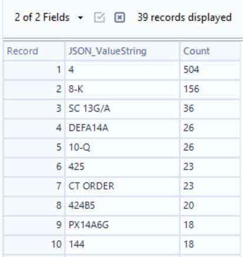
Calculate the number of times each form was filed based on this data set and identify the most popular filing for your company. Answer: Both the most popular filing and the number of times each form was filed will vary based on the company selected. The numbers will also shift over time as the company completes different filings. Remember, only the most recent 1,000 filings are included. At the time this solution was written, for our Tesla example, the most popular filing was Form 4, which was filed 504 times. You can find the detailed solution in step 7 of the Alteryx workflow below. Form 4 is a very common filing for public companies, as are Forms 8-K. Each company’s results will differ. We recommend checking these totals for any changes the day you plan to teach this case.
Part 2: Detailed Alteryx solution
Using the starter file or a blank Alteryx workflow
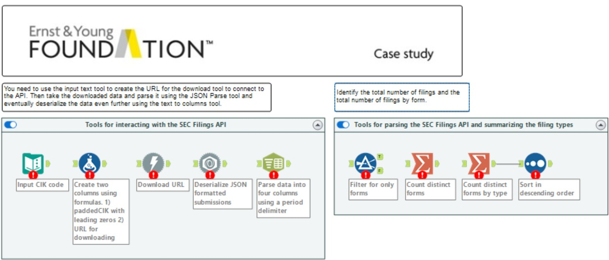
This case includes a starter file that you may wish to provide to your students. The file is labeled Analytics_mindset_case_study_EDGAR_Explorer_two_Submissions_API_starter.yxmd and includes prepopulated tools demonstrating how to create the workflow, as well as commentary about the various tools and steps. The case can also be taught using a blank Alteryx workflow. Note that the starter file will display errors upon opening as there is no input data or connections between tools and also because each tool is not configured. The students will need to work with the file before the workflow will run anything. For example,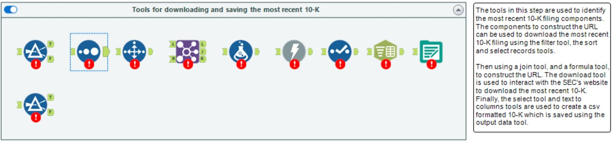
the provided starter file looks like the screenshot below.Solution
The solution is written using a blank Alteryx workflow. If you choose to use the starter file, skip the steps outlining which tool to drag into the workflow and start at the configuration portion of the instructions.
Download the submissions filing for the company you selected. Remember to declare your university name and university email address in the User-Agent header.
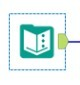
Step 1: Text Input tool (extract, transform, load (ETL) steps)
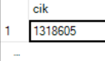
Enter the CIK of the selected company.Drag a Text Input tool onto the workflow.
In the configuration window, change the header to cik and type in the company’s central index key (CIK) in row one.
Step 2: Formula tool
You need to change the format of the CIK entered in the previous step to a string format in Alteryx and pad the CIK number with the right number of leading zeros per the SEC format.
Drag a Formula tool onto the workflow.
Create a new column to hold the paddedCIK. In the configuration window, change the output column to paddedCIK and enter the formula as shown. This will take the CIK code provided in step 1 and add leading zeros (0) up to 10 characters (length), as specified by the formula. The padleft formula is string, length, character.
Using the same formula tool, open up the window below your first formula by clicking the blue plus symbol. Configuration space 2 will open, allowing you to input the URL using the newly created padded CIK.
Enter url as the name of your new output column.
Type in the EDGAR URL: “https://data.sec.gov/submissions/CIK”+[paddedCIK]+”.json.”
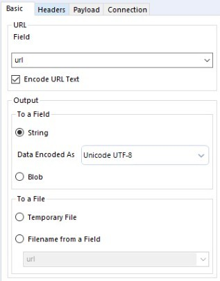
Step 3: Download tool (ETL)Drag a Download tool onto the workflow and connect it to the Formula tool from the prior step.
In the configuration window, select the Basic header (should be the default).
The Data Connection Manager should be unchecked.
In the URL field section, select the variable “url” from the drop-down menu and ensure the encode url text is checked.
In the Output section, select “string” in the To a Field section.
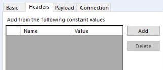
Select the Headers header in the configuration window.
Click the “Add” button.
Fill in Name with “user-agent.”
Fill in Value with the name of your university and your university email address, as shown below.
Do not alter Payload and Connection headers for this case.
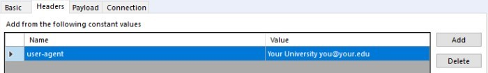
Deserialize the JSON formatted submissions filing for your company.
Step 4: JSON Parse tool (ETL)
Drag a JSON Parse tool onto the workflow and connect it to the Download tool.
In the configuration window, select the “DownloadData” variable in the JSON Field drop-down menu,
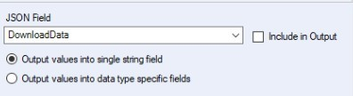
Select Output values into single string field.
You may find it useful to have the students examine the deserialized JSON, noting the variable JSON_Name includes an index linking all the information about the filings. The JSON_Name field will include both header information and an index of the filings. For example, in the Tesla download:
The header information ends with information about Tesla’s former names and the time during which these names were active. For example, for the JSON_Name formerNames.0.name, the corresponding JSON_ValueString is TESLA MOTORS INC, which was Tesla’s former name.
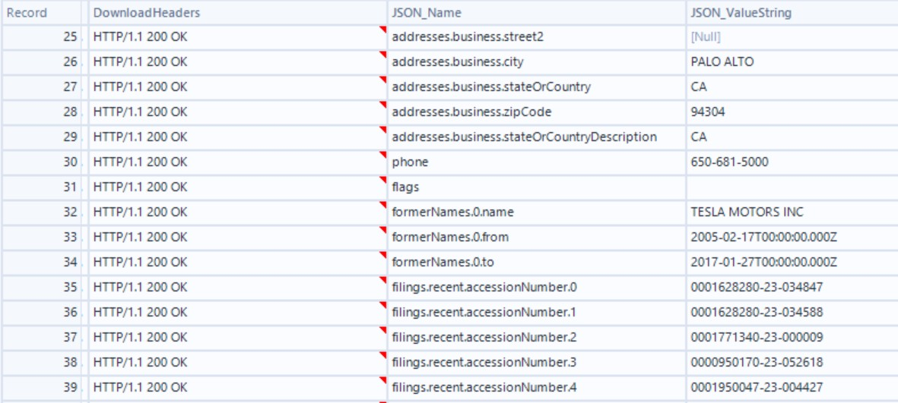
The filings information begins after the header information with the JSON_Name filings.recent.accessionNumber.0. In this example, the JSON_ValueString is 0001628280-23-034847, which is the accession number of the most recent filing as of October 23, 2023. This number will change each time Tesla makes a filing. The exact location of the first accession number will vary between companies depending on how much information is included in the header, but in many cases this information will be found after row 30, which will often be the company’s phone number, depending on if there are any flags or name changes. In our Tesla example, the first accession number can be found in row 35.
Use the output tool to:
Identify the number of unique forms filed by the entity. (Steps 5 to 7)
Calculate the number of times each form was filed based in this data set and identify the most popular filing for your company. (Step 8)
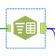
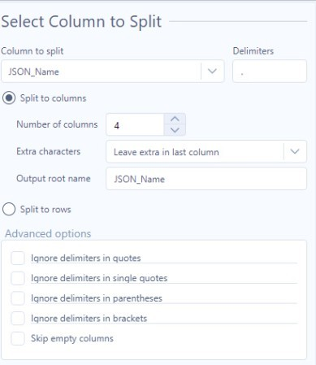
Step 5: Text to Columns tool (ETL)
Drag a Text to Columns tool onto the workflow and connect it to the JSON Parse tool.
In the configuration window, select the “JSON_Name” variable in the Column to split drop-down menu.
Add a period (.) as the delimiter.
Select “Split to columns” and increase the Number of columns to 4.
For Extra characters, select “Leave extra in last column.”
For Output root name, type in JSON_Name (which is expected to be the default).
Step 6: Filter tool (ETL)
Using the JSON_Name as the output root name in step 4 above creates four output variable JSON_Name fields appended with the numbers 1 through 4. The third variable can be used to find all of the forms filings. Reviewing the file and visually seeing the columns will help you know which fields to select and sort. For this step, review the output from step 4 and look at the various fields. You’ll notice that JSON_Name3 has form data and the corresponding JSON_ValueString will have the type of form filed.
Drag a Filter tool onto the workflow and connect it to the Text to Columns tool.
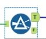
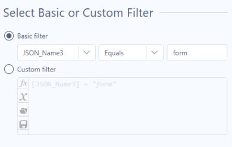
In Basic filter, select the column name “JSON_Name3.”Choose “Equals.”
Type form.
Step 7: Summarize tool to identify the number of unique forms filed by the entity
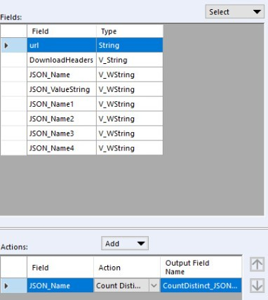
Drag a Summarize tool onto the workflow.Connect it to the T (true) output node of the Filter tool.
In the Fields section, select the variable “JSON_Name,” then in the Action section, use the Add drop-down menu to select “Count Distinct.”
Part 2 answer: There are 1,000 unique forms, but this number will vary and can be above 1,000 for large public companies and could be below 1,000 for recently listed companies (see the explanation in an earlier answer, page 2 of this solution guide and in footnote 1).
Step 8: Summarize and Sort tools
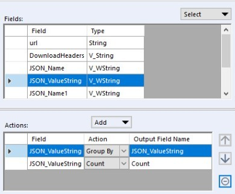
We need to calculate the total number of times each form was filed and identify the most popular filing for your company. You’ve already calculated the total number of forms, now you just need to summarize those forms by type, which is contained in the JSON_ValueString field.Drag a second Summarize tool onto the workflow. Connect it to the same T (true) output node of the Filter tool used in step 5 (the filter tool should now have two outgoing summarize connections).
In the Fields section of the configuration window, select “JSON_ValueString” and use the Add drop-down menu in the Actions section to select “Group By.”
In the Fields section, select “JSON_ValueString” again, but this time use the Add drop-down menu to select “Count” in Action.
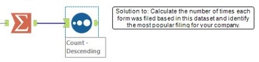
Drag a Sort tool onto the workflow and connect it to the second Summarize tool (the one just configured).Under Name, select the variable “Count” and under Order, select “Descending.”
The most popular filing will generally be an insider trading form, i.e., Form-4. Remember the totals will change from the answer posted here as the company submits additional filings to the SEC.
Part 3: Researching different types of forms or SEC filings
Based on your analysis above, pick two forms you have not heard of before and research the purpose of those forms. The SEC website https://www.sec.gov/forms provides a useful starting point for your research. A filing with “/A” appended to the end is an amended filing. Amended filings are corrected filings of forms that were previously filed with the SEC.
Write a brief description of the forms you are researching, including:
(i) What information is being disclosed by the company.
(ii) Why this information is important to users of financial information.
Return to your Alteryx workflow. Use the appropriate tools to identity the most recent Form 10-K and use the accessionNumber with the SEC EDGAR Archive data URL https:\\www.sec.gov/Archives/edgar/data and the company’s CIK to download the most recent Form 10-K and save it as a csv file. The website address that resolves the filing will be a text document, with the extension .txt.
Save your Alteryx workflow and submit it for grading.
Part 3 Alteryx solution
This portion of the Alteryx workflow has two incoming nodes, both of which link to different Filter tools in the workflow.
The first Filter tool is used to identify the company’s Form 10-K filings and connects to the Filter tool configured in Part 2, step 5 of this case.
The second Filter tool is used to identify accession numbers and connects to the Text to columns tool configured in Part 2, step 4 of this case. See below.
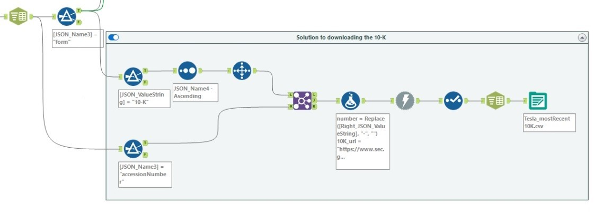
Step 1: Filter, Sort and Select Records tools to identify the most recent Form 10-K filing
Drag a Filter tool onto the workflow and connect it to the T (true) value of the previous Filter tool from Part 2, step 5.
In Basic filter, Select “JSON_ValueString,” then “Equals” and then type in 10-K.
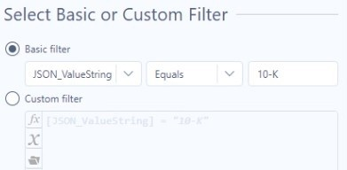
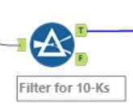
Drag a Sort tool onto the workflow and connect it to the T (true) value of the new Filter tool just configured.
Under Name, select the variable “JSON_Name4.”
Under Order, select “Ascending” (JSON_Name4 is the index number for the filings). The first record is now the latest Form 10-K filed.
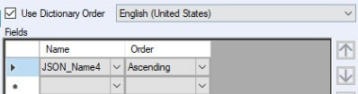
Drag a Select Records tool onto the workflow.
Connect it to the Sort tool just configured.
Under Ranges, type in 1, which will display the first row only, or in this case, the last filing.
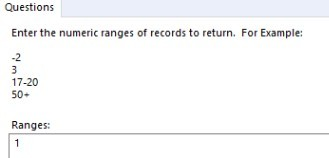
Step 2: Filter tool to keep only accession numbers from all filing data
Drag a Filter tool onto the workflow and connect it to the Text to Columns tool created in Part 2, step 4 of this case.
In Basic filter, select “JSON_Name3,” then equals and then type in accessionNumber.
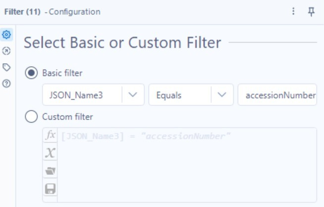
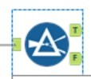
Step 3: Join tool to match the most recent Form 10-K with the correct accession number
Drag a Join tool onto the workflow.
Connect the outgoing node from the Select Records tool in step 1 of Part 3 to the incoming L node and the outgoing T (true) node from the Filter tool in step 2 of Part 3 to the incoming Join node R.
Select Join by Specific Fields.
Under Left, select the variable “JSON_Name4.”
Under Right, select the variable “JSON_Name4.”
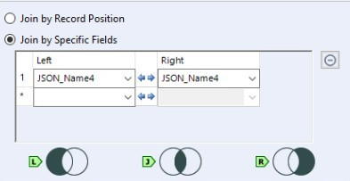
Step 4: Formula tool to create the EDGAR archives URL for the Form 10-K filing
Drag a Formula tool onto the workflow.
Connect the Formula tool to the outgoing J node of the Join tool added in Part 3, step 3.
To construct the EDGAR URL for the Form 10-K, we need to modify the incoming data and output a correct URL. The correct URL includes a standard part, the accession number without dashes and the CIK without the leading zeros. A sample URL is provided for you as you work through the following steps.
There are three formulas needed to create the URL. You can use one Formula tool to add all four formulas to the workflow. For all three of these formulas, you will create a new output column with the results of the formula. The steps to do this are:
Under the Output Column in the configuration window, choose “select column.”
From the drop-down menu, choose “+Add Column” from the Select Column drop-down menu. Type in the new column name.
First formula: Remove the dashes from the accession number.
Create a new column as instructed. Title the new column “number” (without quotes).
Type in the formula: Replace([Right_JSON_ValueString], “-“, “”).
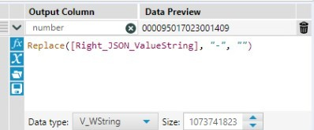
Second formula: Remove the leading zeros. Do not use a replace in case there are zeros in the CIK.
Stay in the same Formula tool. Under the box containing the previous formula, click on the blue + symbol to open another configuration box.
Create a new column as instructed. Title the new column “shortCIK” (without quotes).
Enter the formula: ToNumber([CIK]).
Do not change the Data type to a numerical format. Keep the result a string.
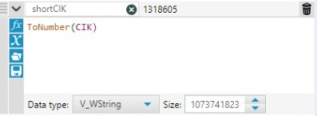
Third formula: Combine the newly created information to create the unique URL that will enable you to download the most recent Form 10-K filing for the company selected.
Stay in the same Formula tool. Under the box containing the previous formula, click on the blue + symbol to open another configuration box.
Create the new column as instructed, naming the column “10k_url” (without quotes).
Enter the formula below. Note that Archives must be capitalized for the download to function.
“https://www.sec.gov/Archives/edgar/data/”+[shortCIK]+”/”+[number]+”/”+[Right_JSON_ValueString]+”.txt”
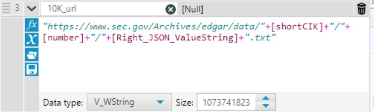
In this case, the correct url will be: https://www.sec.gov/Archives/edgar/data/1318605/000095017023001409/0000950170-23-001409.txt.
The bold and italic portions of the URL above will change as the firm files a new form.2
Step 5: Download tool to download the most recent Form 10-K filing
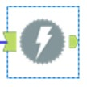
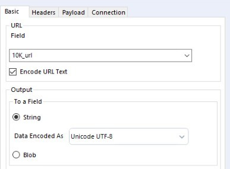
Drag a Download tool onto the workflow.Connect the Download tool to the Formula tool from the prior step.
Select the Basic header in the configuration window (should be the default).
In the URL section, select the variable url (10K_url) in the Field drop-down menu.
In the Output section, select String from the To a Field section.
Select the Headers tab in the configuration window.
Click the “Add” button and fill in Name with User-Agent and Value with the name of your university and your university email address. Both the User-Agent and the details should be without quotation marks (same as Part 2, step 2).
The Payload and Connection headers do not need to be altered for this case.
Step 6: Select tool to choose only the field you want to continue using in the workflow
Connect the Select tool to the Download tool from the step 5.
Deselect all fields, except for the variable DownloadData. This field contains the Form 10-K filing in a raw text format.
In the picture below, the DownloadData field has been moved from the bottom of field list in the configuration window to the top. You can do that by using the arrows at the top of the field list, next to Options.
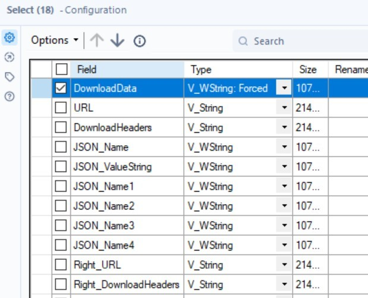
Step 7: Text to columns tool to split the URL text file you created into a CSV file
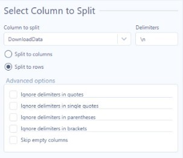
Connect the Text to columns tool to the Select tool from the prior step.Under Column to split, select “DownloadData” (it should be the only option following the use of the Select tool in the prior step).
Under Delimiters, type in “\n,” which designates you want to split the text file into a CSV at the end of each line of text.
Select “Split to rows.”
Step 8: Output data
Connect an Output data tool to the Text to columns tool from the prior step.
Under Write to File or Database, type in the name of the file you wish to save, followed by the extension .csv. For our Tesla example, Analytics_mindset_case_studies_solutions_EDGAR_Explorer_two_Submissions_API_Tesla_mostRecent10K.csv, make sure Use Data Connection Manager is unchecked.
To make the output data work, your Alteryx file needs to be saved. When you run the workflow, the output file will be in the same folder where you saved your Alteryx workbook.
Be aware that the returned data will be in HTML language and these documents include a large amount of formatting information.
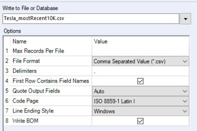
Footnotes
According to the API documentation: “The object’s property path contains at least one year’s of filing or to 1,000 (whichever is more) of the most recent filings in a compact columnar data array. If the entity has additional filings, files will contain an array of additional JSON files and the date range for the filings each one contains.” (See https://www.sec.gov/edgar/sec-api-documentation. Accessed 9/20/23)
↩Alteryx’s preview may show as [Null] as the resulting url string is very long. Alteryx will, however, still compute the correct URL, as shown in our Tesla example.
↩